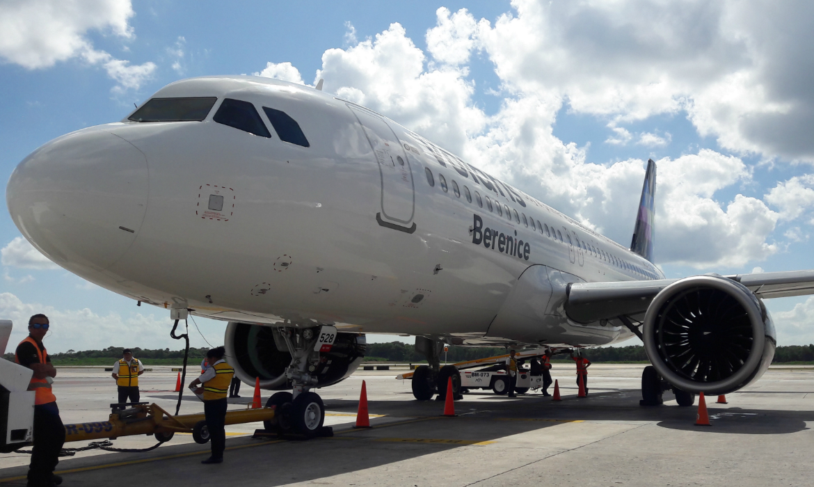

Volai, Žemės ūkio padargai | Autoplius.lt
2020.10.29 05:06
Žinutės Įsiminti 1 Paieškos Peržiūrėti skelbimai Prisijungti + Dėti skelbimą Skelbimai Nauji auto Auto paskola Ket Straipsniai Apžvalgos LT RU EN LV
Volai, Žemės ūkio padargai (172)
Visos paieškos › 1 Tekstinė paieška: volai Išmesti Redaguoti paiešką Apie naujus skelbimus: Pranešimai ekrane Pranešimai el. paštu Pigiausi viršuje Atnaujinti viršuje Pigiausi viršuje Brangiausi viršuje Naujausi viršuje 1 psl. 1 2 3 4 5 6 Kitas Žemės ūkio padargai volai Apie naujus skelbimus: Pranešimai ekrane Pranešimai el. paštu Markė Bomet (13) » Dalbo (10) » Vaderstad (9) » AGRO-FACTORY (6) » HNH Engineering (6) » Kverneland (5) » AGRO-TOM (5) » Doublet-record (4) » JOL-MET (4) » AGRO-LIFT (4) » Daugiau markių Tipas Dirvos tankinimo volai (62) Grėbliai (2) Grūdų tvarkymo technika (4) Krautuvai (2) Kultivatoriai (28) Mėšlo kratytuvai (7) Pašarų ruošimo technika (1) Plūgai (6) Purkštuvai (2) Presai (2) Rulonų vyniotuvai (1) Sėjamosios / sodinamosios (4) Skutikai (23) Srutų laistytuvai, siurbliai (0) Stumdytuvai / sniego peiliai (1) Šienapjovės / smulkintuvai (4) Traktorinės priekabos (1) Tręšimo technika (1) Vartytuvai (0) Žemės dirbimo / ruošimo technika (17) Kita (4) Nauja / naudota Nauja (109) Naudota (63) Ypatumai Šalis Lietuva (172) Daugiau Pardavėjo tipas Privatus (24) Verslas (148) Skelbimas ne senesnis nei Vienos dienos (55) Vienos dienos (tik nauji) (1) Trijų dienų (115) Savaitės (130) Dviejų savaičių (134) Mėnesio (142) Dviejų mėnesių (149)Jus domina parduodami žemės ūkio padargai? Parduodamų žemės ūkio padargų skelbimai pateikiami sąraše. Populiariausios parduodamų žemės ūkio padargų markės pateikiamos kairėje pusėje. Parduodamų žemės ūkio padargų kainos, nuotraukos ir kita informacija nuolatos atnaujinama. Žemės ūkio padargų pardavimas autoplius.lt portale - geriausias sprendimas! Prieš 1 d. 2 -Kita-, dirvos tankinimo volai Volai , volas, prikabinamas lygus volas Nuotrauka ne ju, bet 1 600 € Varėna Įsiminti 2 -Kita-, dirvos tankinimo volai Tankinimo volai 2 300 € 2000 6.00 Pakruojis Įsiminti Parduota! 2 Unia GNIOT, dirvos tankinimo volai 3 000 € 2013 6.00 Šakiai Įsiminti 1 Jar-Met Volai kultivatoriams, dirvos tankinimo volai 1050; Volai komplektuojami su guoliais. Volai kabinasi prie 260 € 2020 Panevėžys Įsiminti
Visi pardavėjo skelbimai 1 Akpil 6 m., dirvos tankinimo volai Darbinis plotis: 6 m. 3 dalys. Volai yra pas ūkininką. Esant susidomėjimui 700 € + mokesčiai 2017 Panevėžys Įsiminti
Visi pardavėjo skelbimai 1 SCAN AGRO SP150, 1,35 m., dirvos tankinimo volai 750 € + mokesčiai 1997 Panevėžys Įsiminti
Visi pardavėjo skelbimai 1 ROL/EX Peiliniai volai , dirvos tankinimo volai 2 050 € 2020 Panevėžys Įsiminti
Visi pardavėjo skelbimai 1 -Kita- 6, dirvos tankinimo volai 3 850 € 2010 Kaišiadorys Įsiminti 1 AGRO-FACTORY Prikabinami volai , dirvos tankinimo volai 4 800 € 2020 Panevėžys Įsiminti
Visi pardavėjo skelbimai 1 ROL/EX Prikabinami crosskill arba kem, dirvos tankinimo volai 5 500 € 2020 Panevėžys Įsiminti
Visi pardavėjo skelbimai 1 Agristal Prizminiai arba kembridžo tipo, dirvos tankinimo volai Volai skirti suspausti paviršinį dirvos sluoksnį mažame gylyje 6 700 € 2020 Panevėžys Įsiminti
Visi pardavėjo skelbimai 1 -Kita- Orlik-6, dirvos tankinimo volai cambridge) dirvos tankinimo volai su/be lyginimo lentomis \ ORLIK 8 090 € + mokesčiai 2020 6.00 Kaunas Įsiminti
Visi pardavėjo skelbimai 1 -Kita- Olvija, dirvos tankinimo volai cambridge) dirvos tankinimo volai su/be lyginimo lentomis \ OLVIJA 8 500 € + mokesčiai 2020 6.00 Kaunas Įsiminti
Visi pardavėjo skelbimai 1 Dalbo Minimax, 8,3 m., dirvos tankinimo volai 11 500 € + mokesčiai 2012 Panevėžys Įsiminti
Visi pardavėjo skelbimai 1 Pom Brodnica Kembridžo tipo volai , dirvos tankinimo volai 14 300 € 2020 Panevėžys Įsiminti
Visi pardavėjo skelbimai 1 ANDRZEJ NAMYSLO Vagotuvai - ravėtuvai, kultivatoriai pločio, kaina 100 Eur/vnt. 3. Volai spygliuotais galais, kaina 100 200 € 2020 Panevėžys Įsiminti
Visi pardavėjo skelbimai 1 Jar-Met Ekologinės akėčios, žemės dirbimo / ruošimo technika 20.) Ilgis su volais (m); 21.) Plotis su volais (m); 22.) Aukštis 1 300 € 2020 Panevėžys Įsiminti
Visi pardavėjo skelbimai 1 Kongskilde Triple K, 4,2 m., kultivatoriai amortizacija. 4 eilės spyruoklių. Gale volai su amortizacija. Pakabinamas 1 500 € + mokesčiai 1996 Panevėžys Įsiminti
Visi pardavėjo skelbimai 1 Doublet-record 3,4 m., kultivatoriai spyruoklių atakos kampas. Gale volai su amortizacija. Lietuvoje neeksploatuotas 1 550 € + mokesčiai 1996 Panevėžys Įsiminti
Visi pardavėjo skelbimai 1 Sipma Grūdų traiškytuvas TYTAN , grūdų tvarkymo technika 1300 - 2000; 23.) 3400; Volai varomi dantračiais. Suteikiama 2 200 € 2020 Panevėžys Įsiminti
Visi pardavėjo skelbimai 1 2 3 4 5 6 Kitas Partnerių pasiūlymai APD servisas
Visų tipų kapitalinis automatinių pavarų dėžių remontas. 6 mėn. garantija.
www.apdservisas.lt
Растаможка, доставка б\у деталей в Россия до 23т. Машинокомплекты из Англии.тел: +37061463722
continentaltransport.ru
Mobilioji versija Forumas Sprendimai verslui Apie kompaniją Kontaktai Naudingos nuorodos Kverneland žemės ūkio padargai , Claas žemės ūkio padargai , Kuhn žemės ūkio padargai , Hardi žemės ūkio padargai , Krone žemės ūkio padargai , Vaderstad žemės ūkio padargai , Amazone žemės ūkio padargai , Överum žemės ūkio padargai , John Deere žemės ūkio padargai , Bomet žemės ūkio padargai , Akpil žemės ūkio padargai , Welger žemės ūkio padargai Pagalba ir informacija: D.U.K. Taisyklės Privatumo politika Klientų aptarnavimas: rašykite čia 2003-2020 © UAB „Diginet LTU“ Skelbiu.lt Aruodas.lt Kainos.lt Paslaugos.lt Cvbankas.lt D I G I N E T Svetainėje naudojami slapukai, kurie padeda užtikrinti jums teikiamų paslaugų kokybę. Tęsdami naršymą, jūs sutinkate su autoplius.lt slapukų politika. Daugiau apie slapukus. Sutinku